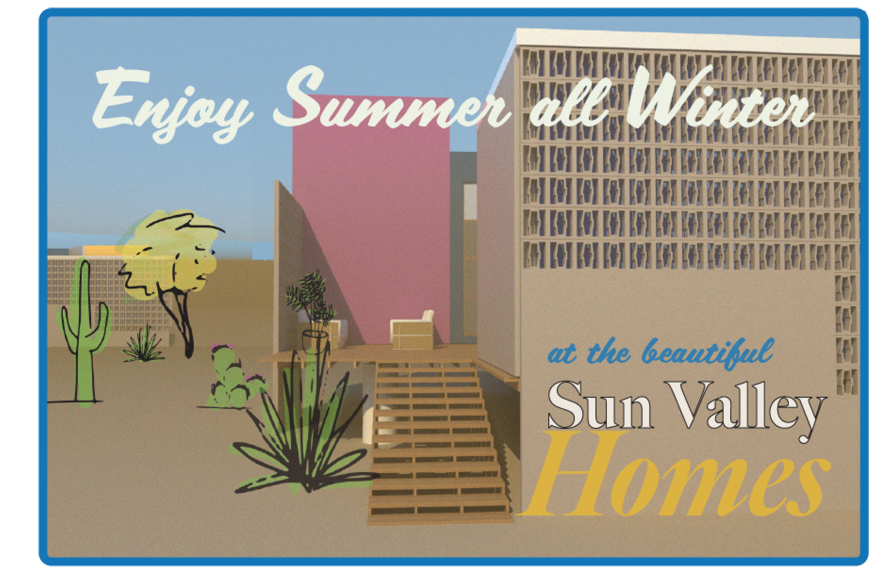
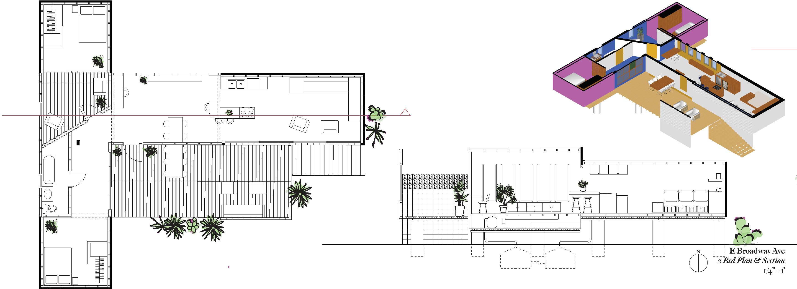
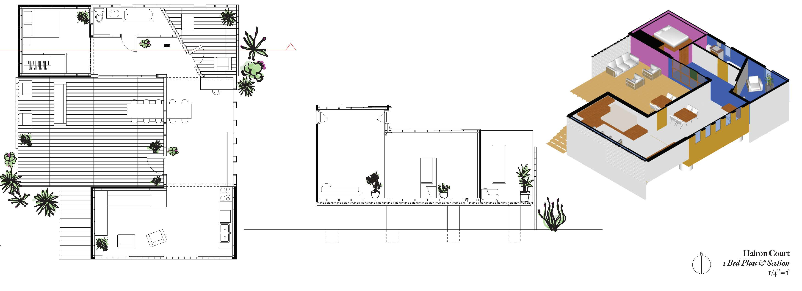
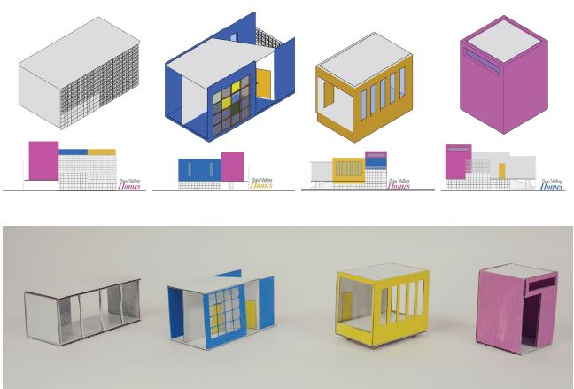
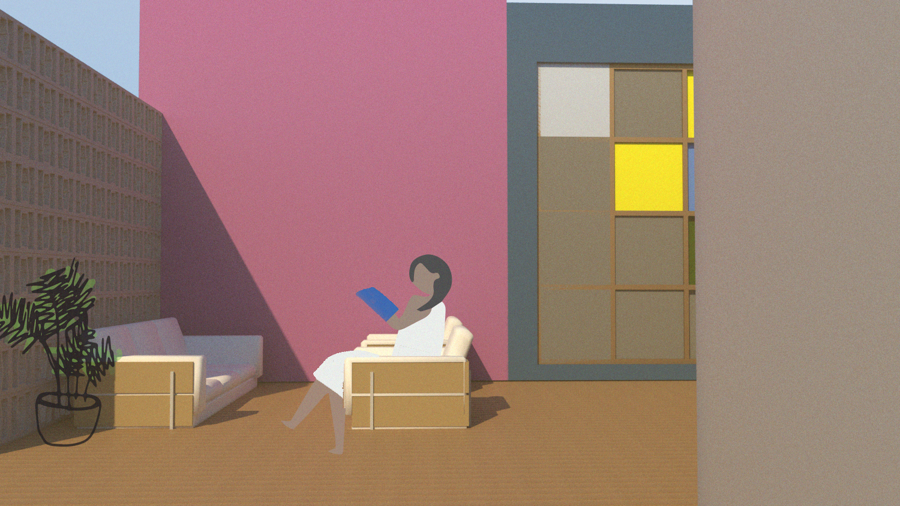
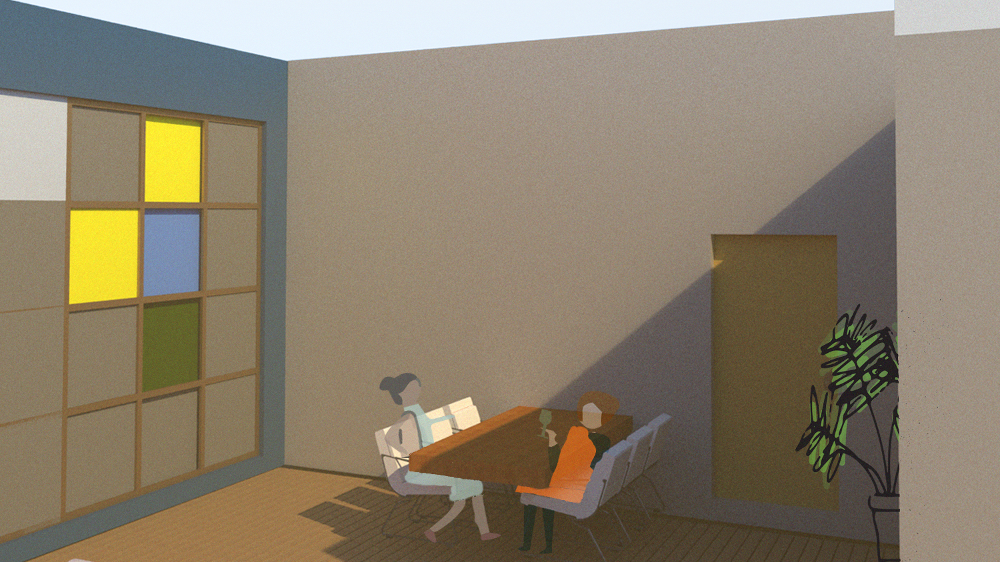
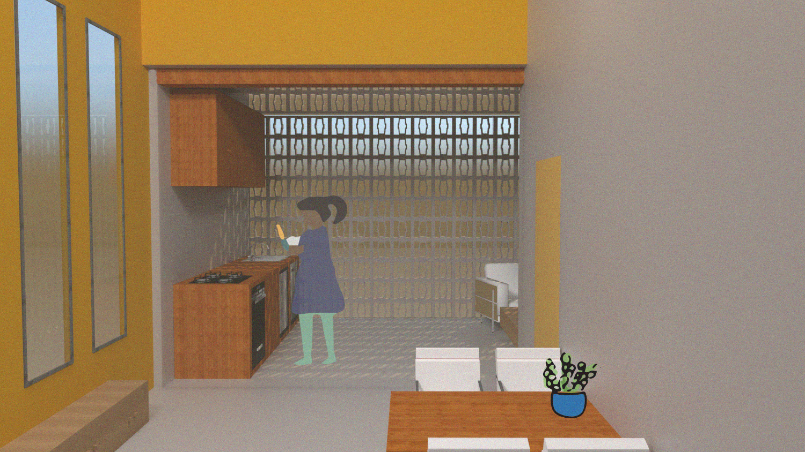
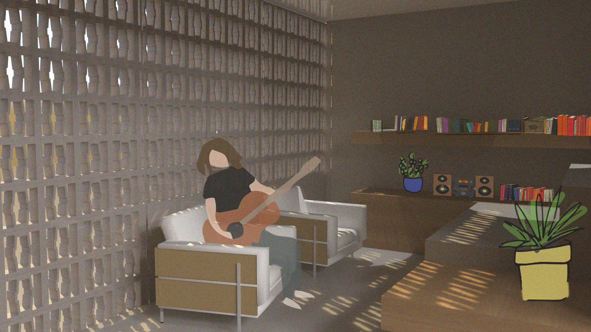
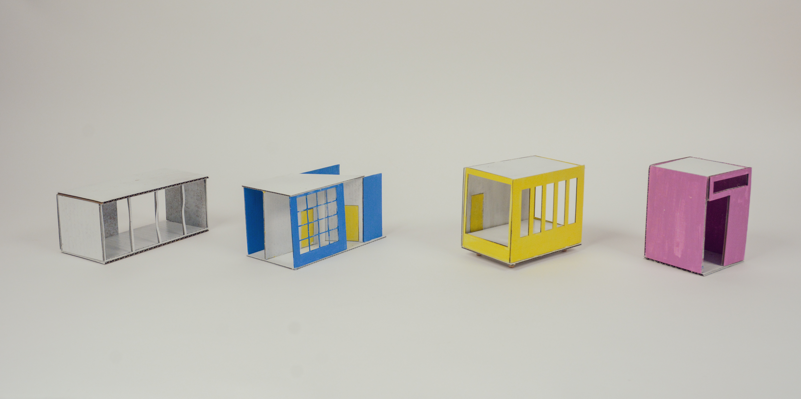
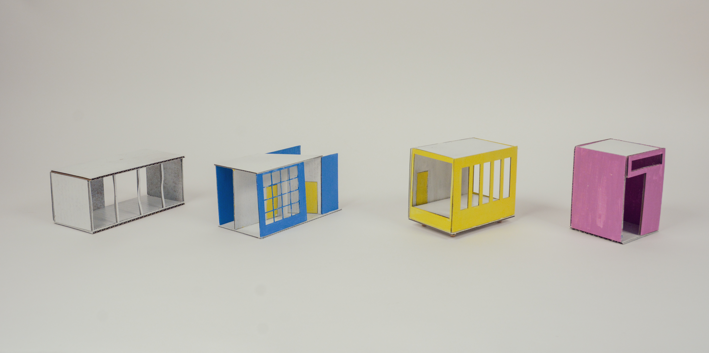

Sun Valley Homes
Modular Housing for Arizon's Megapolitan
This solo design project is a studio project, completed for M.Arch at University of Minnesota. Second year studio was led by Minneapolis architect adjunct professor Christine Albertsson.
The prompt was to design a modular home for a specific climate.

A Megapolitan is an area in which two or more cities are connected by a highway, and along those routes of connection there is a near-continuous fabric of urban sprawl.
Arizona’s Megapolitan is:
Phoenix and Tucson, networked together by roads;
the micro-climates, different shades of desert;
the watersheds, dried out and threatened by new development;
and the sites, leftover parcels amid fringe cities.
Can modular housing respond to these conditions? Deployable, customizable, and prefabricated, modular housing offers a way to home the influx of people moving to the fragile ecology of Arizona’s Megapolitan.


Much of Arizona’s Megapolitan is paved, contributing to an urban heat island that is decreasing percepitation.
This project attempts to add no new impervious surfaces.
Stormwater runoff is not directed to riverbeds, and consequently they are drying up.
Planting that works with the existing landscape will catch runoff. This water management is at the scale of the building and the scale of the site.
Storm events are growing more frequent.
Modularity allows for repositioning of modules based on site climate conditions. In these examples, non-operable windows face the east, the direction monsoons blow in from.
 
An outdoor room is partitioned by planting and breezeblocks - private yet welcoming
A vent in the floor allows cool air from the shaded area below the house to enter, and operable windows at the top of the tall pink module allow for warm air to escape
The front door opens into a liminal space: mutable for different familys’ needs.
Underground water cisterns collect runoff from the slanted roofs, and store for gray water usage in the home
A small terrace allows for a fully private outdoor room, separate from the entrance deck.

The white module combines on site with breezeblocks, to allow light and air in while preventing excess solar gain. It is clad in glass-fiber reinforced concrete (GFRC), for thermal mass.
The blue module has plumbing for a bathroom, hardiboard exterior cladding, and a vent to below to allow for cool air from shaded area to enter.
The yellow module has inoperable windows that are small, for low solar gain, and a below-ground ‘smart’ module, where machinery for the house is stored.
The pink module is clad in GFRC and has high, operable windows that allow for hot air to escape.
   
 
